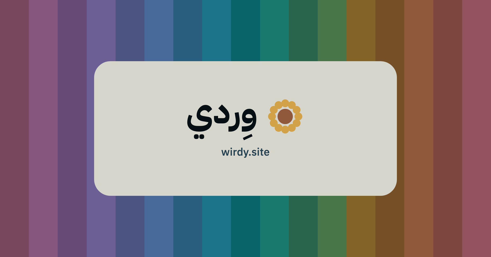
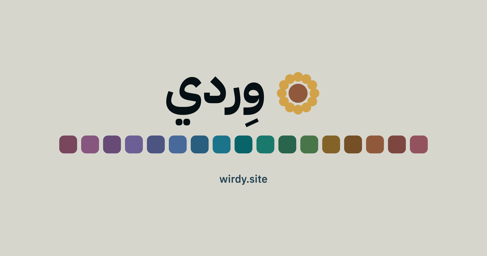
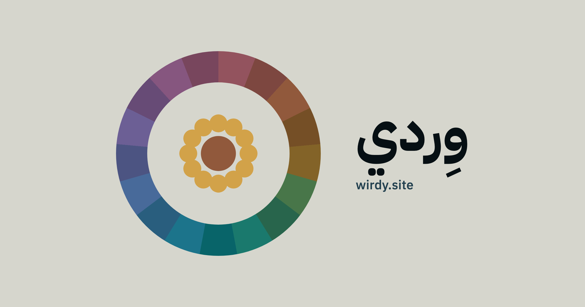
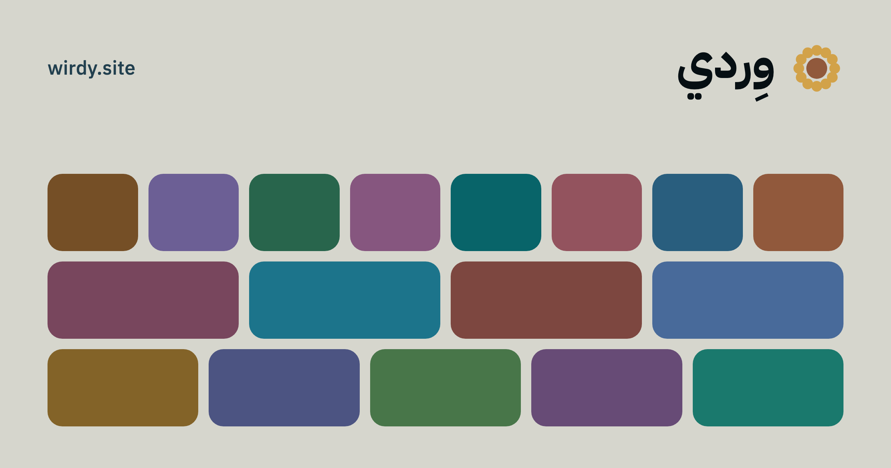
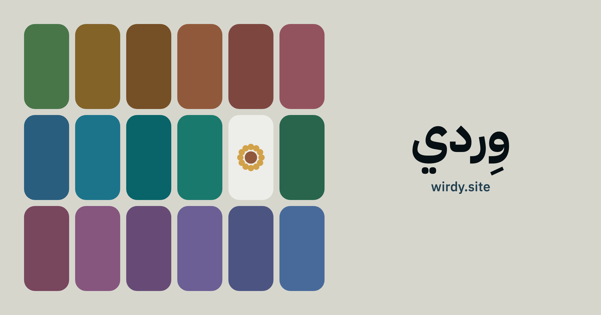
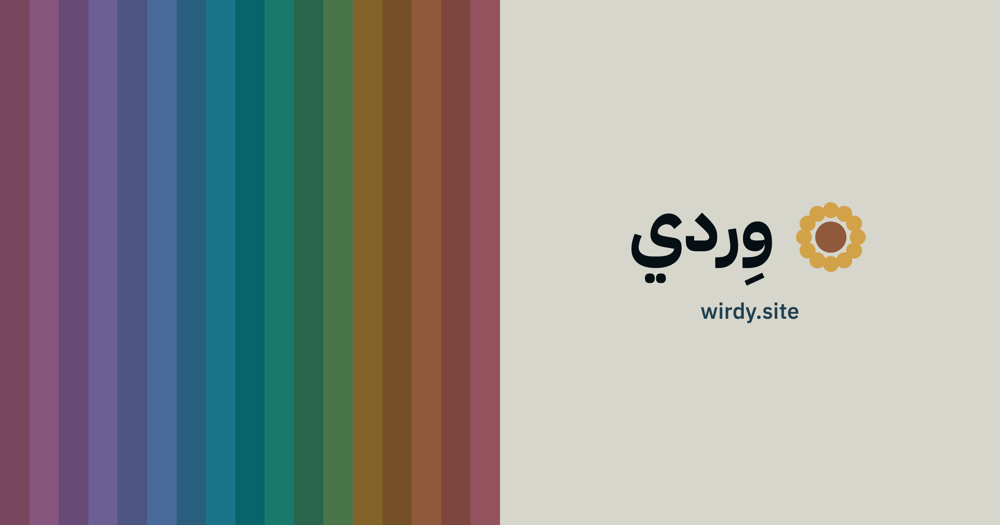
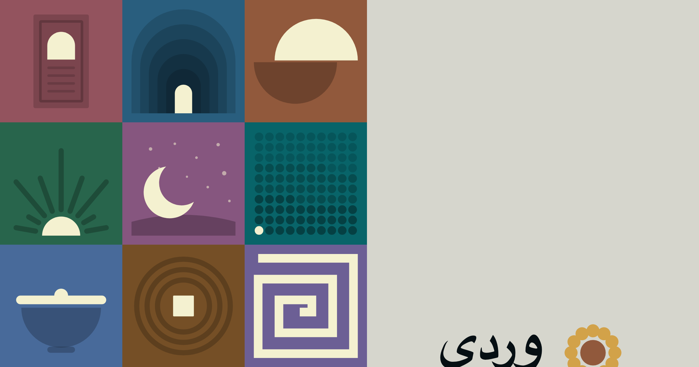

E. A field of colors behind a paper card Recommended
The 17 colors fill the whole image as vertical bands, and the brand sits on a rounded paper card in the middle, the way a page sits on its section color.

Six ways to draw the card a link to the home page shows, each with the drawings removed and only the 17 section colors kept. Each is rendered by the same headless browser and fonts as the real cards, at 1200 by 630. Today's card is at the end: it still lays 17 colors out as a 3 by 3 mosaic, so the extra tiles push «وِردي» to the bottom edge, where it is cut.
The 17 colors fill the whole image as vertical bands, and the brand sits on a rounded paper card in the middle, the way a page sits on its section color.

The brand alone at the centre, large, with the 17 colors as one row of small rounded squares under it, like a palette. The calmest of the six.

The colors come from one arc of hues, so they are drawn as a ring, each section an equal arc, with the sunflower at its centre and the name beside it.

Three rows of rounded tiles in the order and grouping of the home page (8, 4, and 5 sections), under the brand. It previews the page the link opens.

A 6 by 3 grid of rounded tiles: 17 colors and one paper tile that holds the mark, beside the name. Closest to today, without the drawings.

The brand on paper on one half, the 17 section colors as full-height stripes on the other, ordered by hue so they read as one spectrum.

The card on the live site, for comparison.
